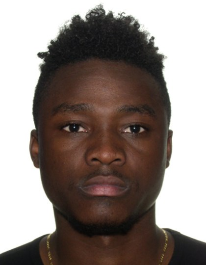

Teofilo Calatre

Summary
Professional Engineer with in-depth knowledge of technical engineering design and implementation, industry safety regulations, end-to-end site design, construction packages, budget management, and project delivery.
Education
- University of Western Ontario (UWO)
- Bachelor of Engineering Science, Electrical and Computer Engineering (2016-2020)
Work Experience
Skills & Interests
- Technical Training: RF designer, Microsoft Office Suite, Python basics, Putty, EMF Visual, Planet EV, iBwave Design, Windcatcher, TEMS, C++.
- Relevant Coursework: Communications Theory, Signal Processing and Digital Systems.
- Interests: 5G NR, IoT networks, ORAN, LTE/HSPA, Cloud-RAN, DevOps.
Extracurriculars & Leadership Experience
- Rogers Leadership Program - July 2020 - July 2021
- LEP Program - October 2019
Others